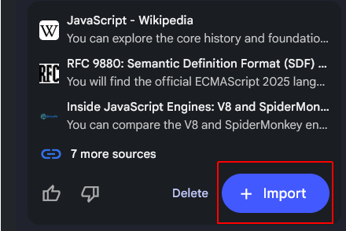
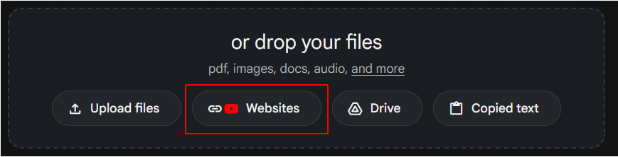
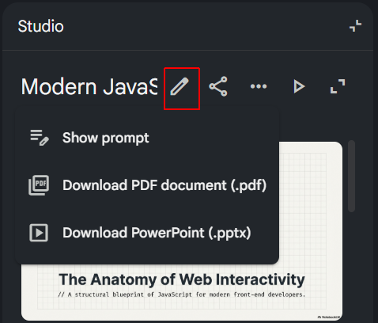
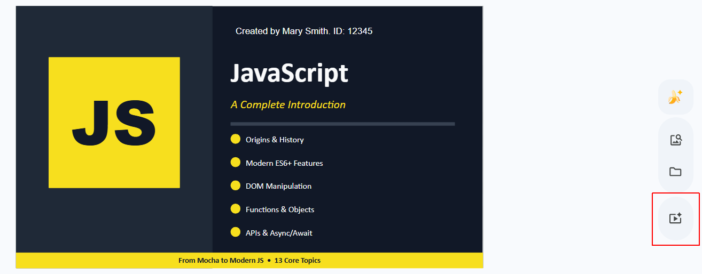
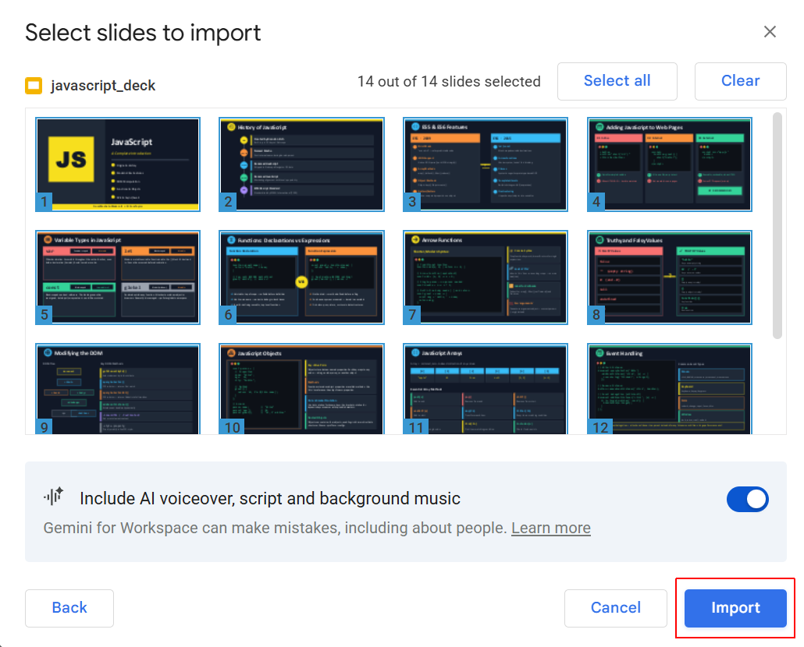

Introduction
At the end of this Tutorial, you will have created a video with a voiceover that covers the origins, evolution and main features of the JavaScript language.
The steps in the Tutorial are just one way to achieve this goal. There are lots of other services and options available. Feel free to use the services that generate the best result.

Your presentation will be graded according to the following rubric on Moodle:
Creating your Google Notebook
Follow the steps below:
- Go to notebooklm.google.com and create a new Notebook.
- In the search box on the left, enter “JavaScript” and click the Arrow button. NotebookLM should find about 10 sources.

- Click the Import + button to add these sources to your Notebook.

- At the top-left of the screen, give your Notebook a name.

- Near the top-left of the screen, click + Add sources.

- A new input area opens up at the bottom centre of the screen. Choose Websites

- Paste in the following list of URLs and click Insert.
https://www.munnelly.com/dorset/javascript/lessons/testing-weird-values
https://www.munnelly.com/dorset/javascript/lessons/generating-html
https://www.munnelly.com/dorset/javascript/lessons/modifying-html
https://www.munnelly.com/dorset/javascript/lessons/interactive-dom
https://www.munnelly.com/dorset/javascript/lessons/events
https://www.munnelly.com/dorset/javascript/lessons/fetch-json
https://www.munnelly.com/dorset/javascript/lessons/fetch-remote
After a short delay, these extra sources should appear in the list of sources on the left of the screen.
Creating your slide deck
In the Studio area at the right of the screen, choose Slide deck and then select the Detailed deck option.
Enter the following text in the dialog box and click Generate.
Using the data sources provided, create an educational slide deck that introduces the JavaScript language to computer science students.
The presentation should be about 20 slides in length and cover the following topics:
* The origin story of JavaScript and how the language got its name.
* The further evolution of JavaScript, particularly the introduction of ES5 and ES6 features, and its impact on web development.
* How JavaScript is typically added to webpages and the role of the "defer" attribute.
* The four main variable types in JavaScript.
* Function declarations and function expressions, and the arrow function syntax.
* Conditional logic and truthy and falsy values in JavaScript.
* An overview of objects in JavaScript.
* An overview of arrays in JavaScript.
* JavaScript and the DOM: creating and manipulating HTML elements.
* Event handling in JavaScript, including adding event listeners and handling user interactions.
* JavaScript and JSON-format files
* Using the Fetch API with the async/await syntax to retrieve data from external sources.
Do not include NodeJS or anything about WebAssembly. Just focus on the evolution of JavaScript, its syntax and features.This may take a while to complete.
When finished, check that your presentation includes all the above topics - and nothing else.
If you notice any missing or incorrect information, click the Pencil icon, enter your required updates, and click the Generate revised deck button.

Next, When the process is finished, follow these steps:
- Click the vertical ellipsis (three dots) in the top-right corner of the generated slide deck.
- Choose Download Powerpoint (.pptx) and save the file to your computer.

- Go to Google Drive, and upload or drag and drop the PowerPoint file into your Drive.
- Open the slide desk in Google Slides and , on the first slide, add your name and student ID.
- Make such changes/additions to your slide deck as you think necessary. This might include adding new slides such as dividers. The better and nicer your slides, the more marks you will get. Your presentation should look as if you spent at least one hour on it. This will include changing the theme, and cumstomising the fonts, colours, and background gradients, and adding images and animations.
- When you are happy with your slide deck, at the right of the screen, click the Convert to video icon, and then click Convert.

- In the dialog box displayed, accept the default option of Include voiceover, script and background music. and click Import.

- When the video is generated, download it to your computer as an MP4 file.
Adding a lip-syncing avatar
Follow the steps below:
- Use Gemini (or other platform) with a prompt such as the following:
Create a lip-syncing avatar for an educational video that provides an introduction to JavaScript. The avatar should be a friendly and approachable character that appeals to computer science students. It should have a clear and expressive face that can effectively lip-sync to the audio narration. The avatar should be designed in a style that is visually engaging and suitable for an educational context, with a focus on clarity and relatability. Please provide the avatar in a format that can be easily integrated into video editing software for use in the final presentation video. Ensure the character is facing forward with a closed mouth, ready to lip-sync to the provided audio narration. The avatar should have a solid white or green background to enable the use of a Chroma Key filter to make the background transparent. - Use a service such as LipSync Studio or Toki AI that offers free daily credits. Upload the slide deck and the audio file.
- In OBS Studio or similar, right-click the source > Filters > + > Chroma Key. Shrink the avatar and place it in the bottom corner, just like a "Facecam" on a Twitch stream.